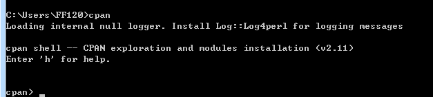

## circos简介 circos是设计用来专门绘制基因图的，但是其应用并不仅仅局限于此，它能胜任任何需要绘制环状图像的地方。 例如在认知神经科学中表示脑区之间的连接。本教程旨在实现绘制以下图像：  该图主要由几个部分组成： 1 chromosome（染色体）； 2 label（标签）；3 links（连接）; 4 间隔 我们要实现这样一个任务： 用chromosome表示脑区，用chromosome长度表示与脑区的关联量，例如脑区体素数量; 用links表示脑区之间的连接,用links线的颜色和粗细以及层次表示连接的强度（例如，连接越强，颜色越鲜艳，线越粗，越靠上层）; 用间隔表示分组，例如分成大脑和小脑。
该图主要由几个部分组成： 1 chromosome（染色体）； 2 label（标签）；3 links（连接）; 4 间隔 我们要实现这样一个任务： 用chromosome表示脑区，用chromosome长度表示与脑区的关联量，例如脑区体素数量; 用links表示脑区之间的连接,用links线的颜色和粗细以及层次表示连接的强度（例如，连接越强，颜色越鲜艳，线越粗，越靠上层）; 用间隔表示分组，例如分成大脑和小脑。
circos安装
circos是运行在perl环境下的跨平台的工具包，只要安装好perl环境，直接解压缩circos的代码就能运行。 ### 安装perl环境 Linux下可以直接安装perl,windows最好使用集成环境，例如Strawberry Perl Strawberry Perl windows 7 旗舰版 64位安装包下载地址: http://strawberryperl.com/download/5.24.0.1/strawberry-perl-5.24.0.1-64bit.msi 安装过程和普通的Windows程序没有区别，一路下一步就可以。  安装完成后，打开CMD，输入
安装完成后，打开CMD，输入perl -v, 出现版本信息就证明安装成功了。
下载circos
circos主程序：http://circos.ca/distribution/circos-0.69-3.tgz circos示例程序：http://circos.ca/distribution/circos-tutorials-0.67.tgz
下载完后解压缩到任意位置（需要解压缩两次，推荐用7z）,切换到bin目录下，键入circos: 如果出现missing …是因为有些circos需要的模块没有安装。
安装perl模块
在CMD键入cpan命令，进入cpan环境  输入install 模块名 就会完成自动下载安装过程。 模块名可以从上面的报错信息中找到。 丢失的模块全部完后，可以按照一下方法做一个测试。
在bin文件夹下面新建一个test文件夹，test内新建一个名称为helloword.conf的文件。
然后在CMD输入命令perl circos -conf test\helloword.conf,会有类似下面的输出  默认会在当前目录下生成circos.png 和 circos,svg两个文件
默认会在当前目录下生成circos.png 和 circos,svg两个文件 
至此，完成了circos的安装，生成了一个最简单的图像。
circos基本概念
组织结构
circos 生成图像所需要的所有内容都保存在一个配置文件中，例如 helloword.conf 这个配置文件以XML的格式来组织。 - <ideogram></ideagram> 标签内定义chromosome的相关属性，例如radius，thickness，fill，
<image></image>标签内定义生成的图像的一些属性，例如生成路径，文件名等12345678<image><<include etc/image.conf>># generated image pathdir* = D:\FMRI_ROOT\YIYU\CONN\PNG# generated image namefile* = 1.png</image><links></links>标签内可定义若干标签，每一对都是一组连接1234567891011121314151617181920212223242526272829<links>#ribbon = yes#flat = yes<link>file = links1000.data.txt # links 文件路径radius = 0.99rcolor = red# Curves look best when this value is small (e.g. 0.1r or 0r)bezier_radius = 0.1rthickness = 2# These parameters have default values. To unset them# use 'undef'#crest = undef#bezier_radius_purity = undef# Limit how many links to read from file and drawrecord_limit = 40000#<rule>#condition = var(intrachr) && abs(var(pos1)-var(pos2)) < 10Mb#show = no#color = red#</rule></link></links>karyotype定义染色体文件路径1karyotype = brainnetome.data.txt
染色体文件
染色体文件在配置文件中用关键字karyotype = data.txt指明。染色体就是环上要显示的实体。数据格式如下：
b 是circos中的保留关键字，可以是chr，代表该行定义的是染色体，可以是band，代表该行定义的是band. band就是染色体上一条染色带。 parent 定义该行的父元素，-表示没有父元素。 ID 该行的标识符，通过ID可以唯一的找到该行 label 将来显示在图像中的该染色体的名字 start 起始位置 end 终止位置 color 定义显示时的颜色 options 可选，前面的字段都是必须的，这里额外添加需要的内容，格式为key1=value1,key2=value2,key3=value3
注意 start end 可以用来控制染色体显示时候的相对比例，例如，如果希望所有的染色体都一样长，可以全部设为 0 1 或者全部设为0 100； 如果希望染色体体积越大越长，则可以start设置为0，end设置为每个染色体的体积。（这里体积只是举例，可以为染色体的任意一个属性）
连接文件
连接文件在<links><link> file = link.data.txt</link><links>中定义，它有两种格式： 第一种：
第二种：
这里的ID都是指karyotype文件中定义的ID。 所以，要实现连接的变化，只需要在定义的每个连接后面定义好相应的颜色，线宽，层次就可以了。
颜色
默认的颜色定义在etc\colors.conf中，默认的颜色定义已经能够满足大部分的要求，使用的时候只需要指定其中的名称即可。 也可以定义自己的颜色文件，在etc\colors.conf添加<<include colors.me.conf>>,然后在etc下新建文件colors.me.conf 颜色文件的定义格式是：
显示配置选项
|
|
circos实例
要生成的图像：  所需文件：
所需文件：
链接: https://pan.baidu.com/s/1eSebD9w 密码: nham
CMD中键入命令perl circos -conf test\me\circos.conf,OK . 
其中colors.me.conf是自己根据colorbar生成的颜色，用来实现不同的颜色代表不同的强度值的目的。 该颜色主题用红色代表最大值，用蓝色表示最小值，值又大变小的过程 对应着 颜色由暖变冷的过程。 下面贴上生成colors.me.conf的matlab代码：
brainnetome.data.txt部分内容:
colors.me.conf部分内容：
生成带分组的图形
先看一个示例 
要想在染色体中间加入分割，可以在ideogram.conf文件中添加如下语句：
这里需要注意的是，定义两个相邻的染色体之间的间隔的时候，如果用r为单位，是相对于default的倍数。 如果default设置成0，则无论多少倍都是0，这时候设置的特定的两个染色体的间隔也不会出现任何效果。